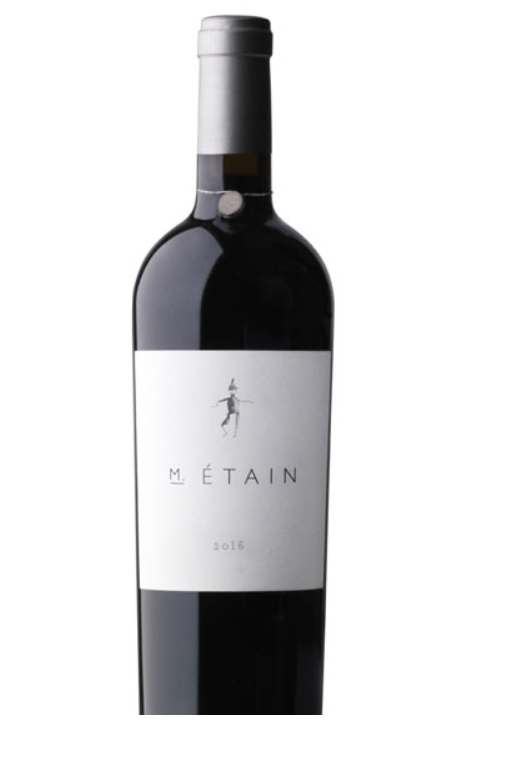

Damilano Wine
The winery produces predominantly red wines, but it is in Barolo that the production reaches the height of its quality. The crus Cannubi, Brunate, Cerequio and Liste have distinct expressions that showcase the differences in terroir, ranging from the innate elegance of Cannubi and Brunate to the more decisive and structured character of Cerequio and Liste.
Our wine
SCARECROW
Well before release, the 2016 vintage was quietly acquiring the respect and admiration of winemakers and reviewers alike. This vintage of Scarecrow shows very ripe dark cherry aromas, combined with cinnamon/baking spice and vanilla notes. Just a hint of earth, anise and tobacco also add complexity to the aromas. On the palate, the entry shows very juicy fresh black cherries, blackberry jam, a touch of baking spices (cardamom, clove) and warm earthy/sweet tobacco flavors. The texture is broad and round, with enough grip to stand up well to a hearty meal. As the wine opens, the solid core shows the age-worthiness of this vintage. The finish is, once again, a reminder of the fresh juicy notes promised by the aromas.
M.ÉTAIN
The 2016 M.Étain, hailing from a nearly perfect growing season, shows abundant Rutherford-esque aromas of dusty berries, dried cherries, sage, and a hint of mocha, as well as warm undertones of vanilla and cedar. On the palate, the wine displays a texture of crushed velvet, with bright red-fruit tones and a solid backbone, and a finish of violet-scented blueberries and warm blackberries.
History
Damilano is one of few traditional, ancient, ultra-centenary Barolo wine makers.
In fact, the Damilano family has been active since 1890 when Giuseppe Borgogno, the great-grandfather of the current owners, started farming and making wine from the family-owned vineyard in Barolo (Cuneo), the town in the Langhe area that the homonymous wine was named after; a beautiful and generous land that has been the heart of the vocation to produce the “king of wines” for centuries.
It wasn’t until the following generation, though, that Giacomo Damilano, the founder’s son-in-law, gave the current name to the winery. It was he who gave the stimulus to preserve the vines and apply constant innovation in the quality of the winemaking process, making the winery become a “jewel” to proudly pass on to his nephews, who manage the company since 1997.
Guido, Mario, and Paolo Damilano have been capable of giving new lymph and push to the family company, particularly giving value to the prince grape of the Langhe, the Nebbiolo, and specific terroirs, the Cannubi above all.
Our team
Contacts
POST OFFICE BOX 144
RUTHERFORD, CA 94573
TELEPHONE 707.963.3361
INFO@SCARECROWWINE.COM
WHILE OUR VINEYARD PROPERTY IS NOT OPEN TO THE PUBLIC, WE ARE ALWAYS HAPPY TO HEAR FROM YOU VIA OUR EMAIL ABOVE.